FCCN Network & Provider Setup
How to bring a new Family Child Care Network (FCCN) into ECMS, affiliate an individual home-based FCC Provider with it, and give the network's own staff a working vendor portal login.
Overview
An FCCN doesn't run its own childcare site directly the way a CBO does — instead, it
oversees a network of independent, home-based FCC (Family Child Care) Providers, each one
a small licensed daycare business run out of someone's own home. In ECMS, both the FCCN and each Provider
it oversees are Account records, just with different record types (Family Childcare
Network and Family Childcare Provider). A Provider is linked back to its network
through a single lookup field on the Account — ECMS_Affiliated_Network__c — not a
separate junction object. This guide walks through creating both accounts, wiring up that affiliation, and
provisioning portal access for a member of the FCCN's own staff (for example, an
Affiliation Manager). As with Guide 1, this is internal, DOE-side setup work normally done
by an Operations Analyst (OA) or the ECMS Admin, working in the internal
Salesforce app.
Steps
1Open the Accounts list
DO Click the Accounts tab in the top navigation bar, then switch the list view to All Accounts so you can see every existing CBO, FCCN, Provider, and household account in the org.
RESULT The Accounts list view loads, showing every account with its billing city, phone, and type — CBOs, FCCNs, and FCC Providers all live in the same object, just with different record types.
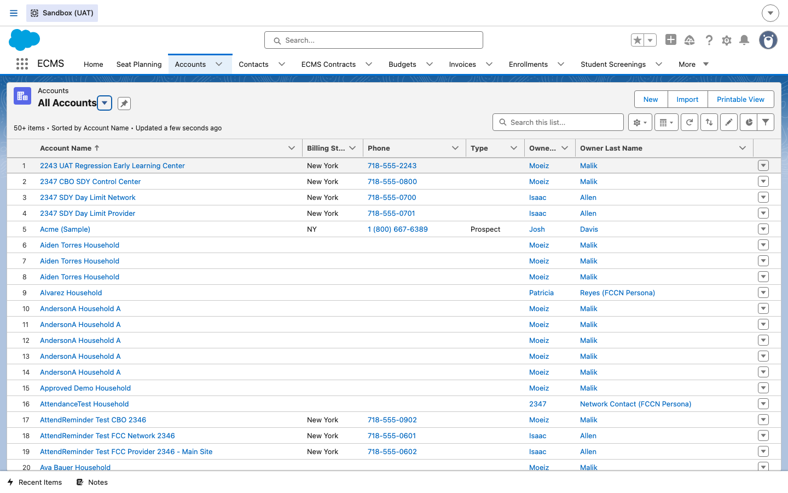
2Start a new FCCN account
DO Click New. When prompted for a record type, choose Family Childcare Network and click Next. Fill in the Account Name (the network's legal/DBA name) and, in the Network Information section, set Network Status, Vendor Tax ID, and the Network Boroughs it serves.
RESULT A "New Account: Family Childcare Network" form opens with fields specific to FCCNs (Network Bio, Network Status, Program Number, Network Boroughs, Network Languages) — noticeably different from a CBO's site-oriented fields, since the network itself doesn't have a borough/district of its own.
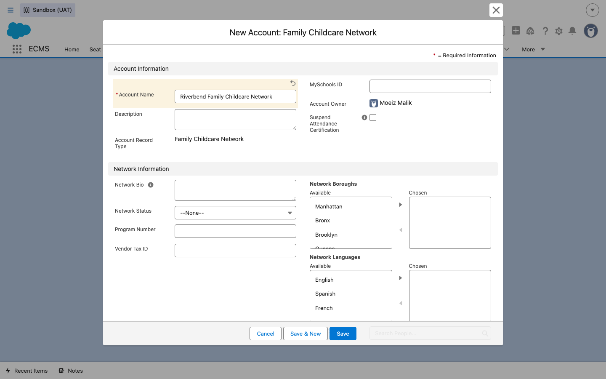
3Save the FCCN account
DO Click Save.
RESULT The Account record is created and you land on its detail page, with a Providers tab (in addition to Details, Activity, and Documents) and related-list quick links for Contacts, Affiliations (Affiliated Network), Calendars, and Files.
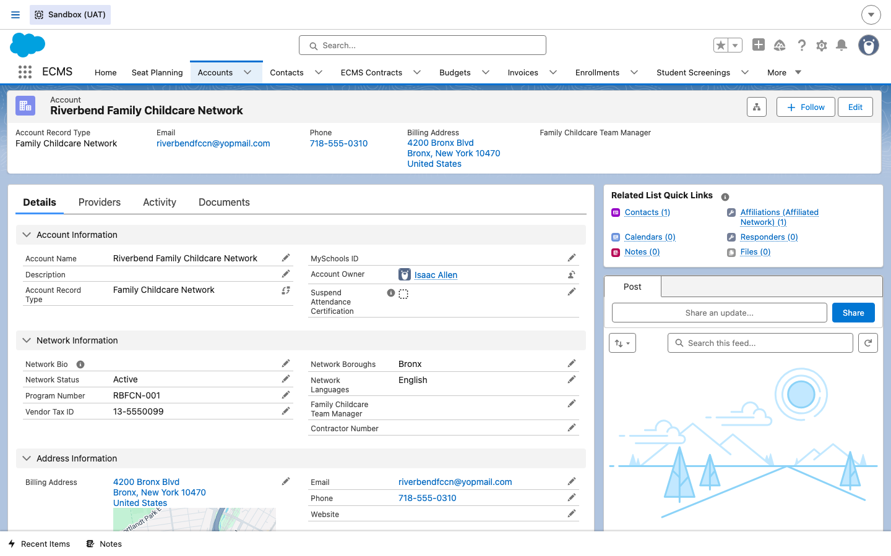
4Create the affiliated FCC Provider account
DO Go back to the Accounts tab and click New. Choose the Family Childcare Provider record type and click Next. Fill in the Account Name (the individual home Provider's business name) and set the Affiliated Network lookup to the FCCN account you just created.
RESULT A "New Account: Family Childcare Provider" form opens with Provider-specific fields (License Type, Meals, and the Affiliated Network lookup) plus the standard address fields for the home's physical location.
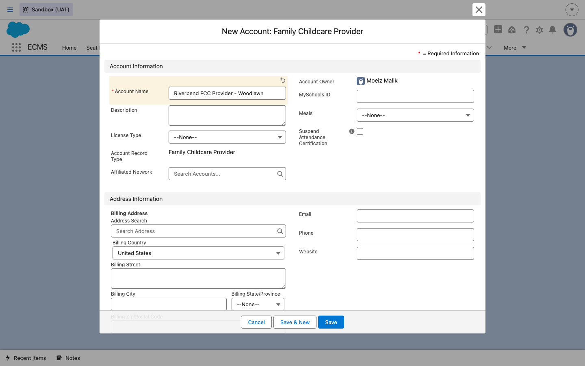
ECMS_Affiliated_Network__c) is the entire mechanism — there's no
separate junction/relationship object to create. Once it's set, the Provider automatically shows up in
the FCCN's Providers tab and Affiliations related list.
5Save the Provider account
DO Click Save.
RESULT The Provider's Account record is created, showing Affiliated Network linked back to the FCCN, plus related lists for Contacts, Sites Master, Incident Cases, Enrollments (Provider Name), Affiliations, and Family Childcare Applications.
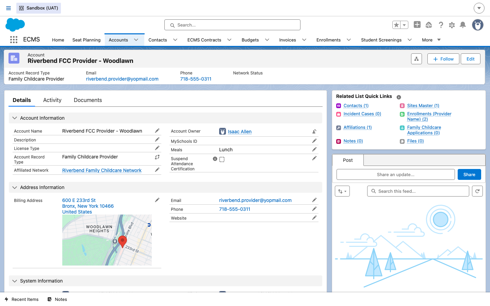
6Confirm the affiliation on the network
DO Go back to the FCCN's Account record and click the Providers tab.
RESULT The Affiliations related list shows the newly-created Provider, with its Affiliation Status (Active) and Affiliation Start Date.
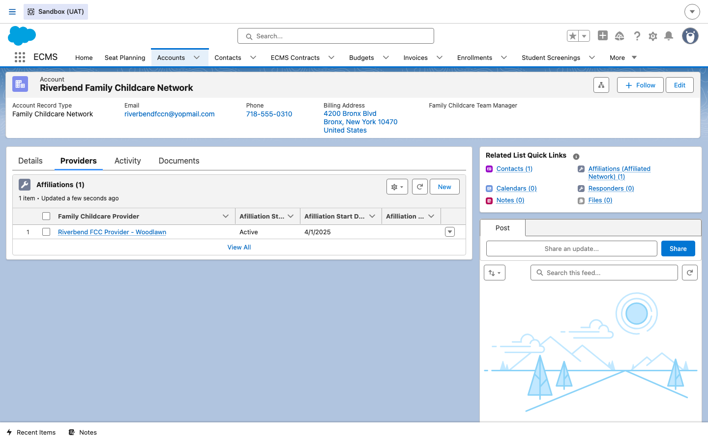
7Add the network's staff contact
DO Go to the Contacts tab and click New, choosing the Staff record type. Fill in First Name, Last Name, Title (e.g. "Affiliation Manager"), and set Account Name to the FCCN account — not to the individual Provider account.
RESULT A "New Contact: Staff" form opens, linked to the FCCN.
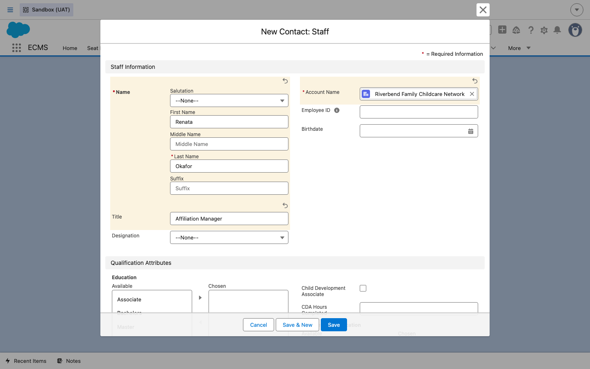
8Save the contact
DO Click Save.
RESULT The Contact record is created on the FCCN account. Notice the same extra action buttons as Guide 1: Provision Contact and Log in to Experience as User, plus View Partner User.
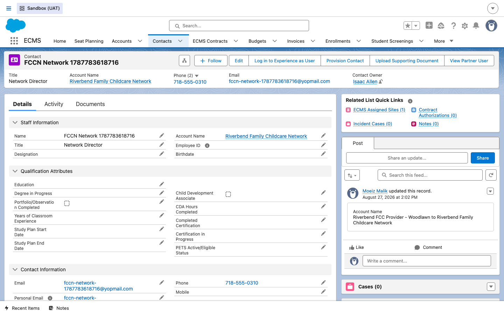
9Provision vendor portal access
DO On the Contact record, click Provision Contact. On the first screen, check the ECMS functions this network staffer needs and click Next. On the second screen, check the box for the affiliated Provider site(s) they should have access to, then click Next.
RESULT The functions screen shows FCCN-specific options alongside the CBO ones — Network Management (create/provision other users for this network), Provider Management (manage onboarding for affiliated Providers), Education Specialist, Family Worker, Education Director, and FCC Provider Accounts (access to Provider accounts related to this network). The second screen's "Select Sites" list is scoped to the affiliated Provider's site, since the FCCN itself has no site of its own.
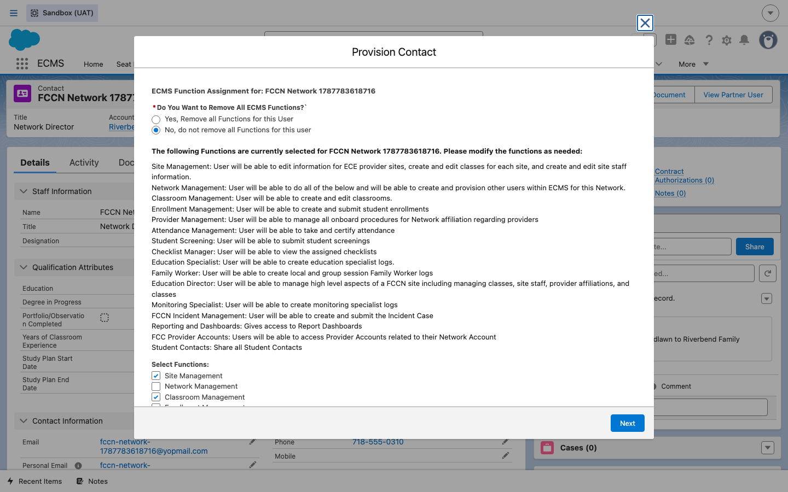
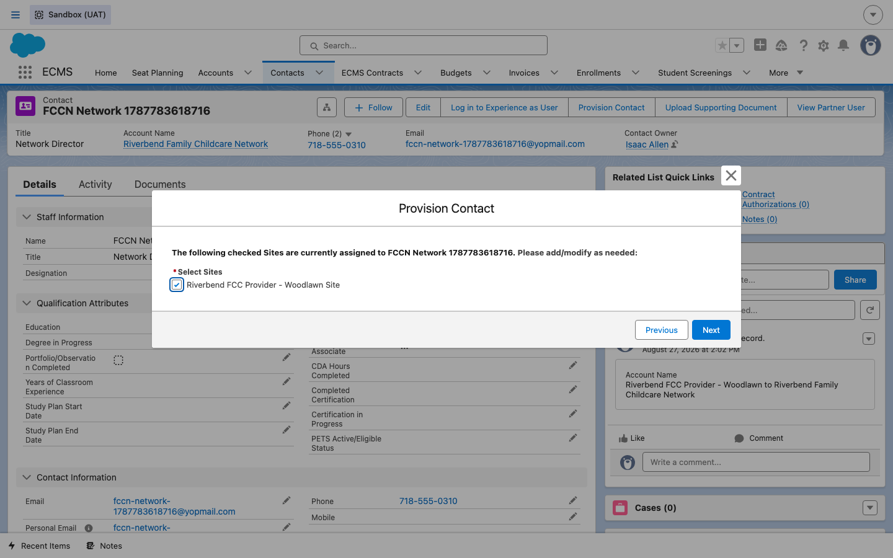
10Confirm the network staffer's portal view
DO From the Contact record, click Log in to Experience as User to see exactly what this person sees when they log into the vendor portal themselves.
RESULT The vendor portal home page loads under the DOE-branded header, showing this user's name and network in the top-right corner and quick-action tiles for the functions they were provisioned with (Create Enrollment, Report Incident).
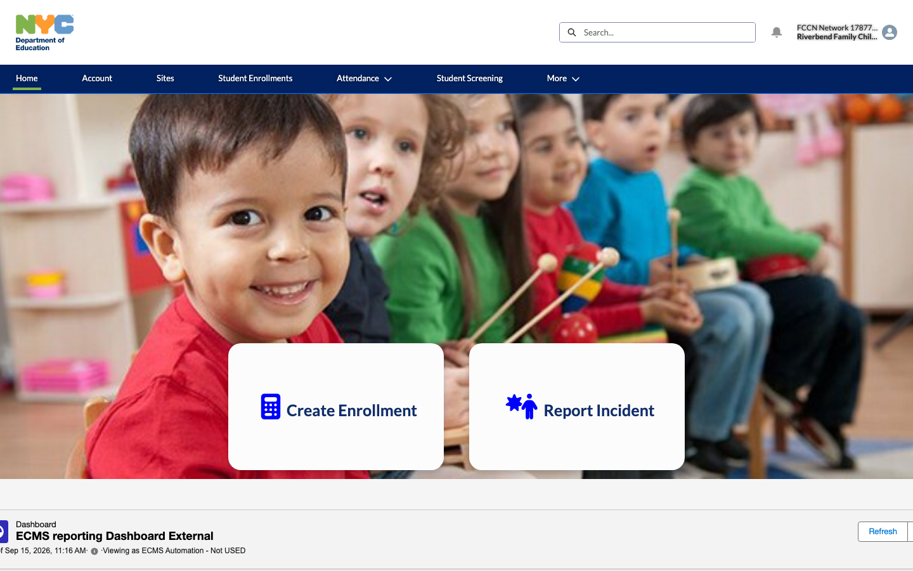
Clicking Sites in the portal's top navigation confirms the affiliated Provider's home site from step 5 is visible to this user, with Site Type FCC and the School/CBO column pointing to the Provider account — not the network.
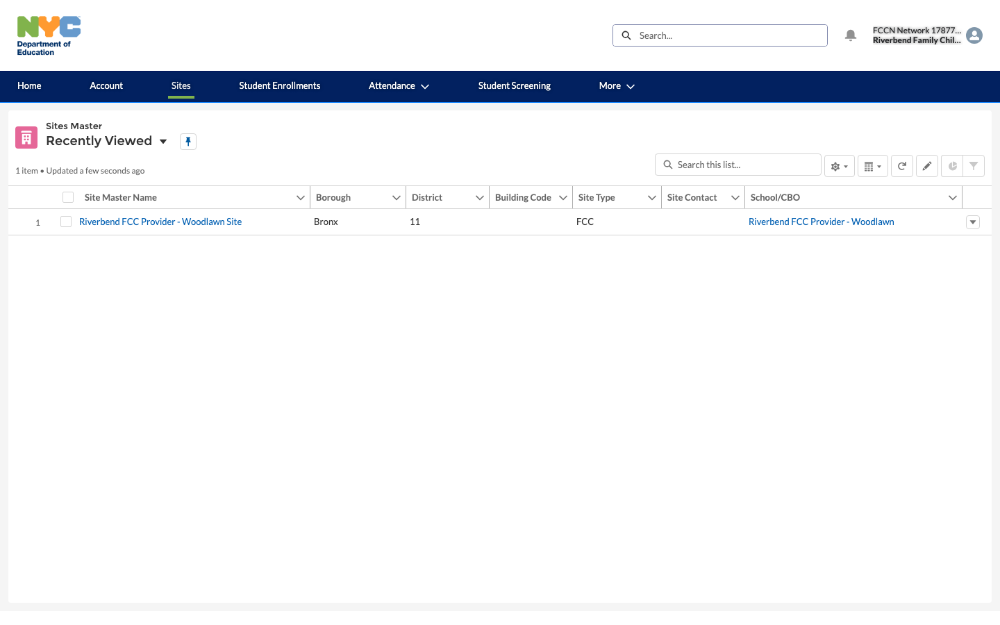